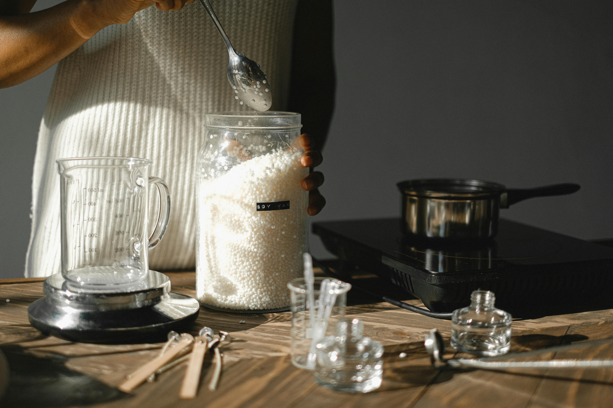

Mon Parcours & la Naissance de ZenBrush
ZenBrush est né d’un rêve simple mais ambitieux : réunir science, nature et écologie pour concevoir des produits efficaces, sains et respectueux de notre planète.
Je suis EL HIMER YOUCEF, étudiant en chimie passionné par l’innovation durable. Depuis mes débuts en laboratoire, j’ai toujours été fasciné par la puissance des éléments naturels.
C’est dans le cadre de mon projet de fin d’études que ZenBrush a vu le jour : un dentifrice solide à croquer, 100% naturel, sans plastique ni compromis.
Pourquoi un dentifrice à croquer ?
Il était temps de repenser nos habitudes d’hygiène buccale. Les tubes en plastique, les ingrédients controversés, les déchets inutiles…
ZenBrush propose une alternative écologique et sensorielle. Pratique, naturelle, et respectueuse de l’environnement, chaque pastille transforme une routine en geste engagé.
Ma Vision : Nature, Santé et Durabilité
Chez ZenBrush, je crois en une évidence : la nature détient les meilleures solutions, lorsqu’on la comprend et qu’on agit avec respect.
- Nettoyer en douceur
- Protéger durablement
- Reminéraliser naturellement
Aucun ingrédient inutile. Aucun compromis. Seulement l’essentiel, activé par la science et nourri par la nature.
« ZenBrush n’est pas qu’un produit. C’est une démarche, un engagement, une vision pour demain. » 🌿